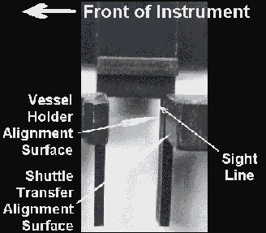
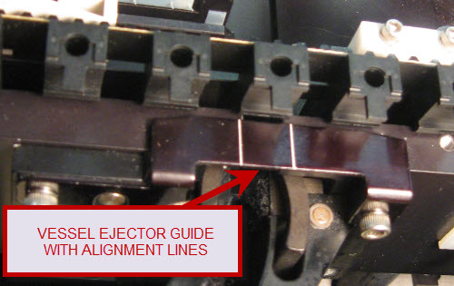
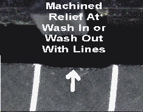

Aligning Incubator Belt
This procedure describes how to align the incubator belt.
Perform this procedure when:
- Incubator belt has been retensioned or replaced.
- Incubator belt bearings have been replaced.
- Incubator drive motor has been replaced.
- Incubator drive belt has been retensioned or replaced.
- Wash wheel has been serviced (bearings or motor has been replaced).
-
Confirm that these prerequisites steps are completed prior to performing any steps in this alignment.
-
Confirm that the incubator belt is not worn or damaged (no cracks or worn edges) and is tensioned correctly.
Note: For incubator belt tensioning instructions, refer to Replacing Incubator Belt procedure.
-
Confirm that the vessel holders are not damaged or broken. Replace the vessel holders, as required.
Note: For instructions on installing vessel holders, refer to Replacing Incubator Belt procedure.
-
Confirm that the incubator belt passed calibration.
Note: Refer to Calibrating Incubator Belt procedure
-
Confirm that the incubator belt is not worn or damaged (no cracks or worn edges) and is tensioned correctly.
-
Align the RV clip at the shuttle transfer position to the waste chute when the incubator belt is homed.
Note: Adjustment of the home alignment affects all the other alignments.
- Home the incubator belt.
-
View the waste chute gap in the analytical module housing from the waste chute side. Confirm that the inside surface of the vessel holder leg is aligned with the wall of the gap.

-
If the vessel is not aligned with the wall of the gap, align the vessel.
- Slightly loosen the home and index sensor mounting bracket.
- Slide the entire bracket so that the vessel holder aligns to the gap.
Note: Sliding the bracket toward the back of the instrument will move the vessel holder closer to the front of the instrument. The opposite is true if the bracket is moved toward the front.
- Home the incubator belt and again view the alignment. Repeat the process of homing the incubator belt and moving the sensor mounting bracket until the alignment is as close as possible to perfect,
- Tighten the home and index sensor mounting bracket, and recheck the home to transfer alignment one more time.
- After adjusting the home and index sensors, recalibrate the incubator belt.
Note: Refer to Calibrating Incubator Belt procedure.
-
Align the incubator belt at the shuttle transfer location. There are two methods of shuttle transfer position alignment, one is performed (step a. below) using the incubator housing as a guide. The second method uses alignment lines machined into the vessel ejector guide (step b. below) to determine correct positioning.
Incorrect incubator belt or shuttle alignments can cause jams at the shuttle transfer location. For instructions on aligning the RV shuttle, refer to the Aligning RV Shuttle and Rake procedure.
-
Perform the alignment using the incubator housing for positioning
- Home the incubator belt.
- Move the incubator belt to the shuttle transfer position.
- View the waste chute opening in the analytical module housing from the waste chute side. The inside surface of the vessel holder leg should be aligned with the right-side wall of the opening.
- If necessary, use the left and right arrow keys to adjust the position of the shuttle transfer to align the vessel holder leg with the right-side wall of the waste chute opening.
- Note the offset value. This offset should be within ±3 steps. If this value is greater than ±5 steps an
INCB Calib Range overrun event will be posted during an incubator belt calibration.
Note: If a satisfactory offset value cannot be achieved, the RV clip alignment procedure ( Step 2) and the incubator belt calibration will need to be repeated. Refer to Calibrating Incubator Belt procedure.
- Save the alignment.
-
Performing the alignment using the alignment lines machined into the vessel ejector guide.
Note: This vessel ejector guide is installed on instruments numbered 511562 and above.

- Home the incubator belt.
- Move the incubator belt to shuttle transfer position.
- Compare the position of the vessel holder to the alignment lines on the vessel ejector guide.
- Using the left and right arrow keys, center the vessel holder between the lines on the vessel ejector guide.
- Note the offset value. This offset should be within ±3 steps. If this value is greater than ±5 steps an
INCB Calib Range overrun event will be posted during an incubator belt calibration.
Note: If a satisfactory offset value cannot be achieved, the RV clip alignment procedure ( Step 2) and the incubator belt calibration will need to be repeated. Refer to Calibrating Incubator Belt procedure.
- Save the alignment.
-
Perform the alignment using the incubator housing for positioning
-
Align the incubator belt at the wash-in position.
-
Perform the alignment.
- Home the incubator belt.
- Move the incubator belt to the wash-in position.
- Compare the position of the vessel holder to the alignment lines or to the machined relief on the rear side of the incubator track.

Note: Some instruments have no lines at the wash-in or wash-out positions. Some instruments have lines only at the wash-out position. If there are no lines, use the machined relief to perform the alignment. - Using the left and right arrow keys, center the vessel holder between the lines or on the machined relief, and then save the alignment. (Maximum offset = ±10. The ideal alignment would be ≤ 8.)
Note: If a satisfactory offset value cannot be achieved retension and recalibrate the incubator belt. Refer to Replacing Incubator Belt andCalibrating Incubator Belt procedures. Step 2 will then need to be repeated.
-
Perform the alignment.
-
Align the incubator belt at the wash-out position.
-
Perform the alignment.
- Home the incubator belt.
- Move the incubator belt to the wash-out position.
- Compare the position of the vessel holder to the alignment lines or to the machined relief on the rear side of the incubator track at the wash-out location.
- Use the left and right arrow keys to center the vessel holder on the machined relief, and then save the alignment. (Maximum offset = = ±10. The ideal alignment would be ≤ 8.)
Note: If a satisfactory offset value cannot be achieved retension and recalibrate the incubator belt. Refer to Replacing Incubator Belt andCalibrating Incubator Belt procedures. Step 2 will then need to be repeated.
-
Perform the alignment.
-
Verify the alignments by performing the following exercises.
-
Run the Vessel Holder exerciser.
- Initialize the system (if necessary).
- From the Supplies screen, add reaction vessels (if necessary).
- Select Diagnostics (F7) > Device Diagnostics (f4) > Exerciser (F6) then select Reaction Vessel Holder from the test menu.
- Select Start Cycle (F2).
- Observe each RV transfer from the shuttle into the incubator and from the incubator to the shuttle.
- Complete one full Reaction Vessel Holder cycle.
- Mark the vessel holders that are moved by an RV during the shuttle to incubator or incubator to shuttle transfers.
- Troubleshoot as required:
- If no vessel holders move because of an RV transfer, then shuttle to incubator RV transfer function has been verified.
- If some of the vessel holders move because of an RV transfer, then replace affected vessel holders and calibrate the incubator belt.
- If most of the vessel holders move because of an RV transfer, then check the belt tension and the shuttle to incubator belt alignment. Refer to Replacing Incubator Belt andCalibrating Incubator Belt procedures. Step 2 will then need to be repeated.
Note: Any corrective action will require the exerciser to be rerun. -
Run the Wash Carousel Transfer exerciser.
- Select the Wash Carousel Transfer option from the exerciser screen test menu.
- Select Start Cycle (F2).
- Observe each RV transfer from the incubator belt into the wash carousel and from the wash carousel back to the incubator belt.
- Note any vessel hlder movement when the wash wheel passes the RV through it.
- Note any unusual noises when the wash wheel moves.
- Complete one full Wash Carousel Transfer cycle.
- Troubleshoot as required:
- If no vessel holders move because of an RV transfer, then wash-in and wash-out RV transfer function has been verified.
- If some of the vessel holders move because of an RV transfer, then replace affected vessel holders and calibrate the incubator belt.
- If most of the vessel holders move because of an RV transfer, then check the belt tension and the shuttle to incubator belt alignment. Refer to Replacing Incubator Belt andCalibrating Incubator Belt procedures.
- If unusual wash wheel noise or motion errors occur, refer to the Aligning Wash Carousel procedure.
Note: Any corrective action will require the exerciser to be rerun.
-
Run the Vessel Holder exerciser.
- At the successful completion of the exercisers reinstall the incubator track light shield and the transparent incubator cover ( if they were removed).